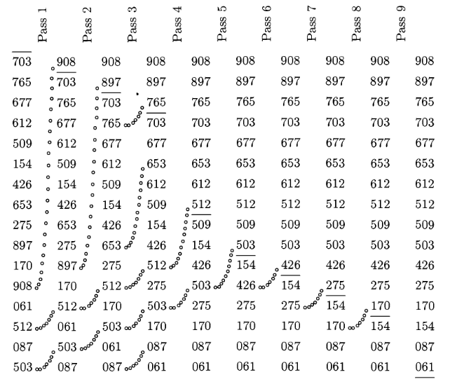
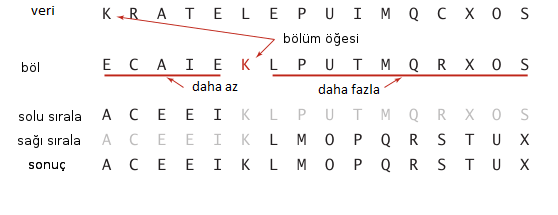

Sıralama (Sorting)
Kabarcık Sıralaması (Bubblesort)
Kabarcık Sıralaması (KS) öğe değiştirerek sıralama yapan bir algoritma. Yer değiştirerek sıralamanın en kolay yolu baştan başlayarak bir dizin içindeki iki öğeyi karşılaştırmak, ve eğer soldaki öğe sağdakinden büyük ise iki öğenin yerini değiştirmek. $A$ dizini içinde $A_1,A_2,..,A_n$ öğeleri için $A_1,A_2$ ile başlarız, sonra $A_2,A_3$ diye gideriz, böyle devam eder. Bu işlem sırasında tüm dizindeki büyük öğeler sağda toparlanmaya başlar, hatta en büyük öğe en sağa gidip $A_n$ olacaktır. Bu işlemi ardı ardına tekrarlamak (ikinci sefer ilk $n-1$ öğe üzerinde, sonra $n-2$, vs) dizinin tamamen sıralanmasını sağlayacaktır.
Anlatım amaçlı olarak $A_1$'i en altta $A_n$'i en üstte olacak şekilde gösterelim,

Algoritma ismindeki "kabarcık" ismi büyük değerlerin sanki su içindeki bir hava kabarcığı gibi üste doğru çıkmalarından geliyor.
def bubble_sort(l):
last = len(l)-1
for passes_left in range(len(l)-1, 0, -1):
if passes_left > last: continue # atla
for index in range(passes_left):
if l[index] < l[index + 1]:
# hucredeki degerlerin yerini degistir
l[index], l[index + 1] = l[index + 1], l[index]
# for dongusu bittiginde en son degisim yapilan indis
# alttaki deger icinde olacak, bu indisten yukari cikmaya
# gerek yok, onun ustunu siralanmis kabul ederiz
last = index
return l
arr = [703, 765, 677, 612, 509, 154, 426, 653, 275, 897, \
170, 908, 61, 512, 87, 503]
print bubble_sort(arr)
[908, 897, 765, 703, 677, 653, 612, 512, 509, 503, 426, 275, 170, 154, 87, 61]
KS en kötü ihtimalde dizin üzerinde o dizin sayısı kadar geçiş (pass) yapar. Fakat her geçiş bittiğinde en son değişimi yapılan en üstteki öğeyi bir sınır kabul edebiliriz, ve onun üstündekilerin sıralamasının tamamlanmış olduğunu kabul edebiliriz, bu bize performans açısından fayda sağlar. Bu bilgiyi sonraki geçişte kullanabiliriz, en son değişimi yapılmış en üst indis yukarısına sonraki geçişte gitmeye gerek yoktur. Algoritmik olarak bu faraziye doğrudur, çünkü en üstteki değişim sınır noktası olmasa, kabarcık o geçiş sırasında yukarı çıkmaya devam ederdi. Etmediğine göre o geçişteki en üst değişim o demektir.
KS'nin hesapsal çetrefilliği $O(N^2)$.
Quicksort
En ünlü ve hızlı işleyen sıralama algoritması hızlı sıralama anlamına gelen quicksort. Quicksort böl-ve-ele-geçir (divide-and-conquer) usulü sıralama yöntemlerinden biridir. Bir dizini alır, ve iki parçaya (partition) böler, her parçayı ayrı ayrı sıralar. Peki alt parçaların sıralaması nasıl yapılır? Quicksort'un kendisiyle! Yani bir özyineli çağrı var.
Bu noktada pivot kavramını anlamak lazım: pivot seçilen bir dizi öğesi sadece; her geçişte eldeki dizinin ilk öğesi olarak seçilebilir; sonra iki parçayı yaratırken pivottan az ve fazla olan değerler olarak parçalar yaratılır. Ardından her parça üzerinde o parçayı sıralamak için özyineli çağrı yapılır, her iki özyineden geri döndükten sonra ve bir üst seviyeye geri vermeden önce "az olan değerler + pivot + fazla olan değerler" olarak tüm parçaları birleştiriyoruz. Her alt özyineli çağrının kendi işini yaptığını tümevarımsal olarak biliyoruz, o zaman birleştirme de doğru olduğu için en tepede çağrıyı başlatan her şey bittikten sonra elinde tamamen sıralanmış bir dizin bulacaktır.
Peki her iki parça üzerindeki özyineli çağrının kendi işini yaptığından nasıl emin oluruz? Özyineli bir şekilde daha küçük, daha küçük ikili parçalara gide gide en sonra tekil öğeler seviyesine ineriz, ve bu seviyede pozisyonlandırma artık sıralamanın ta kendisidir, ardından özyineli çağrılar geri sarılırken artık dizin sıralanmış olacaktır.

def partition(seq):
# pivot'u bul ve ana dizinden cikart
pivot, seq = seq[0], seq[1:]
# pivot'tan tum kucuk ogeler
lo = [x for x in seq if x <= pivot]
# pivot'tan tum buyuk ogeler
hi = [x for x in seq if x > pivot]
return lo, pivot, hi
def quicksort(seq):
if len(seq) <= 1: return seq
lo, pivot, hi = partition(seq)
# lo ve hi parcalarinin ayri ayri sirala, siralanmis
# kucuk ogeler + ortada pivot + siralanmis buyuk ogeler
# olacak sekilde birlesimi geri dondur
return quicksort(lo) + [pivot] + quicksort(hi)
array = [97, 200, 100, 101, 211, 107]
res = quicksort(array)
print res
letters = list('KRATELEPUIMQCXOS')
res = quicksort(letters)
print res
[97, 100, 101, 107, 200, 211]
['A', 'C', 'E', 'E', 'I', 'K', 'L', 'M', 'O', 'P', 'Q', 'R', 'S', 'T', 'U', 'X']
HS'nin hesapsal çetrefilliği $N\log(N)$.
Kaynaklar
[1] Sedgewick, Algorithms, 4th Edition
[2] Knuth, The Art of Computer Programming, Volume 3, 2nd Edition
[3] Heatland, Python Algorithms
Yukarı